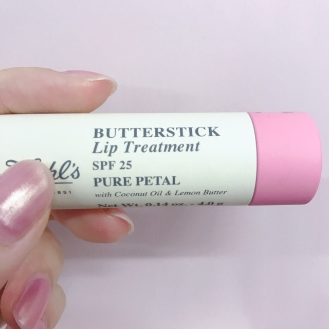
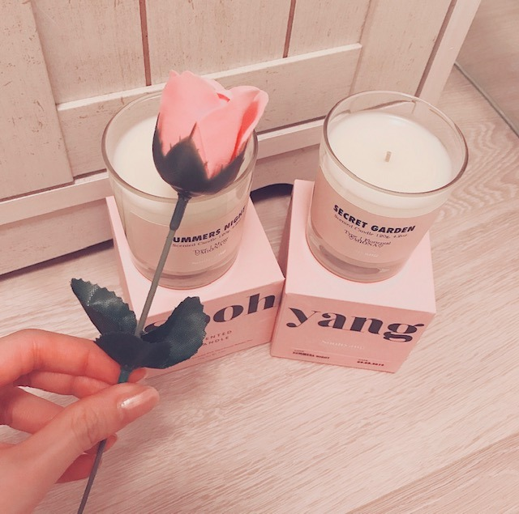

2019/0825Sun#24時間TV
こんにちは。
数日間、吐き気と目まいに襲われていて
たくさんの方にご心配とご迷惑をおかけしています、、
喉の薬の副作用と軽い熱中症らしいので
今はたくさんお水を飲んで安静にしています☺︎
ライブでは万全の状態で皆さんにお会いできるよう早く治します！
ご心配をおかけしてごめんなさい、、
最近は髪にもUVのスプレーを、
唇にもUVケアのものをつけています☺︎

キールズのリップクリームは
淡いピンクの色付きでSPF25 の唇のナチュラルな血色感もだしつつ、紫外線から唇を守ってくれる
有能リップクリームさんです❤︎
この他にも愛用しているリップクリームはたくさんありますが最近はこれがお気に入り

あとは堀家に新しいキャンドルも増えました！
たくさん種類のある中から
"SUMMERS NIGHT" "SECRET GARDEN"
の香りを選びました☺︎
絢音とお揃い~
そしてよーく見ると実はラベルに
♡MIONA♡
って入ってます！
メッセージや名前をラベルに入れられるキャンドル屋さんなの~ かわいいすぎる、
夜はアロマキャンドルに癒されてます...❤︎
キャンドルをそれぞれ選んでたのに
好きな匂いが結局同じで。笑 さすが☺︎❤︎
6年間ずっと一緒にいても
嫌なところなんて1つもないあやねちん
いつも体調を心配してくれたり嬉しいことがあると
1番に言ってきてくれたり
これからも、おばあちゃんになっても
仲良くしたいな~


このあと、24時間TVに出させていただきます！
わたしも朝から目玉焼きとお味噌汁と梨を食べながら少し観てきました。楽屋でも準備しながらみんなで観たよ。
是非、見てください☺︎
では
2019/08/25 13:54
コメント(404)
未央奈、ブログ更新ありがとう＼(^o^)／
吐き気と目眩辛かったよね(。>д<)
もう、TV出演しても大丈夫なの？
無理せず、ゆっくり休んでほしい。
アロマキャンドルお洒落だね！
流石や～( ´∀｀)
では(*￣∇￣)ノ
吐き気と目眩辛かったよね(。>д<)
もう、TV出演しても大丈夫なの？
無理せず、ゆっくり休んでほしい。
アロマキャンドルお洒落だね！
流石や～( ´∀｀)
では(*￣∇￣)ノ
堀ちゃんブログ更新してくれてありがとう。
無理せずに今は休んで、また元気な姿見せてください！
24時間テレビ頑張って！
お大事に！
無理せずに今は休んで、また元気な姿見せてください！
24時間テレビ頑張って！
お大事に！
堀ちゃんブログ更新ありがとう。
昨日の全握、体調不良で途中欠席したから心配したよ。
でも生放送でるみたいだし安心したよ。
でも無理したらダメですよ。
頑張りすぎもいけませんよ。
でもそれが堀ちゃんの良いとこだね。
がんばってね。
応援するからね。
昨日の全握、体調不良で途中欠席したから心配したよ。
でも生放送でるみたいだし安心したよ。
でも無理したらダメですよ。
頑張りすぎもいけませんよ。
でもそれが堀ちゃんの良いとこだね。
がんばってね。
応援するからね。
みおなの体調が1番です！
24時間テレビ見ます！！
24時間テレビ見ます！！
未央奈ちゃん体調大丈夫？
神宮参戦するので楽しみにしてます♡
24時間テレビも楽しみだけど、体調だけは無理しないで頑張ってください！！
神宮参戦するので楽しみにしてます♡
24時間テレビも楽しみだけど、体調だけは無理しないで頑張ってください！！
体調まだ完全回復ではないと思うのにブログ更新ありがとう！
私も今24時間テレビ見てるよ！人は人と繋がると新しい出会い、新しい気づきができますよね！！私も周りの人との関係を大切にしたいと思います。
アロマキャンドル、匂いがスッキリしてて心も体もあったまりますよね！
では、、
goodluck
私も今24時間テレビ見てるよ！人は人と繋がると新しい出会い、新しい気づきができますよね！！私も周りの人との関係を大切にしたいと思います。
アロマキャンドル、匂いがスッキリしてて心も体もあったまりますよね！
では、、
goodluck
無理しないでね！お大事に
みおな、体調大丈夫？？
無理はしないでね！！
無理はしないでね！！
未央奈ちゃん急いで治そうとしなくて大丈夫だからね！？
ゆっくり自分のペースで治してまた元気な未央奈ちゃん見せてください☺︎❤︎
絢音ちゃんとの写真めちゃくちゃかわいい
ゆっくり自分のペースで治してまた元気な未央奈ちゃん見せてください☺︎❤︎
絢音ちゃんとの写真めちゃくちゃかわいい
未央奈さん ブログ更新ありがとう。
お体大丈夫ですか。無理をせずにゆっくりやすんでくださいな。
握手会では残念お見せできませんでしたが、BEAMSのホットギミックTシャツがかっこ良く着れてお気に入りになりました。次は神宮3日間ですね！
今はゆっくり休んでキラキラと輝く未央奈さんを楽しみにしています！
あやねちゃん素敵ですよね。
先日握手させていただき、応援の旨をお伝えいたしました。
ずっと仲良しって素敵です。うらやましいな。では神宮で！
お体大丈夫ですか。無理をせずにゆっくりやすんでくださいな。
握手会では残念お見せできませんでしたが、BEAMSのホットギミックTシャツがかっこ良く着れてお気に入りになりました。次は神宮3日間ですね！
今はゆっくり休んでキラキラと輝く未央奈さんを楽しみにしています！
あやねちゃん素敵ですよね。
先日握手させていただき、応援の旨をお伝えいたしました。
ずっと仲良しって素敵です。うらやましいな。では神宮で！
体調まだ完全回復ではないと思うのにブログ更新ありがとう！
私も今24時間テレビ見てるよ！人は人と繋がると新しい出会い、新しい気づきができますよね！！私も周りの人との関係を大切にしたいと思います。
アロマキャンドル、匂いがスッキリしてて心も体もあったまりますよね！
では、、
goodluck
私も今24時間テレビ見てるよ！人は人と繋がると新しい出会い、新しい気づきができますよね！！私も周りの人との関係を大切にしたいと思います。
アロマキャンドル、匂いがスッキリしてて心も体もあったまりますよね！
では、、
goodluck
大変やったね、お大事にね
未央奈と絢音ちゃんかわいい
24hTV観るでね！
未央奈と絢音ちゃんかわいい
24hTV観るでね！
無理せずがんばってねー
応援してるよーー
ブログ更新ありがとう！
未央奈ちゃんこれからも体調に気をつけて頑張ってね
24時間テレビ楽しみにしてるねー
未央奈ちゃんこれからも体調に気をつけて頑張ってね
24時間テレビ楽しみにしてるねー
未央奈さんゆっくり休んでください〜
24時間テレビ楽しみにまっとーよ！
24時間テレビ楽しみにまっとーよ！
こんにちは。
体調大丈夫ですか?
24時間テレビ無理しないで頑張ってくださいね。
観てます。
体調大丈夫ですか?
24時間テレビ無理しないで頑張ってくださいね。
観てます。
あまり無理しないでね。
24時間テレビ楽しみです。
24時間テレビ楽しみです。
お大事に〜
…miona blogへのコメ初めてでごめんなさい

楽しみに
 …待っ
…待っ まふ
まふ
無理しなぃでねぇ
休養はじゅうぶんにとってマイペースに
P.S.
絢音ちゃんゃさすぃし仲ょき

つめ
肌白ぃ
これからもみおたん応援してぉりま…
楽しみに
無理しなぃでねぇ
休養はじゅうぶんにとってマイペースに
P.S.
絢音ちゃんゃさすぃし仲ょき
つめ
肌白ぃ
これからもみおたん応援してぉりま…
強がらなくていいお大事に
無理せず、体に気をつけて頑張ってね！！
堀ちゃんブログ更新してるじゃん。
体調悪いからブログ更新も24時間テレビもでないと思っていたよ。
もう大丈夫なんだね。
良かった、24時間テレビ見るからね。
神宮も心配なさそうだね、
神宮で元気な姿見れるの期待できるね。
なんかほっこりしました。バーイ。
体調悪いからブログ更新も24時間テレビもでないと思っていたよ。
もう大丈夫なんだね。
良かった、24時間テレビ見るからね。
神宮も心配なさそうだね、
神宮で元気な姿見れるの期待できるね。
なんかほっこりしました。バーイ。
体調は大丈夫ですか？
あまり無理しないで心身共に休息してくださいね。
幕張メッセでの全握中に体調不良と聞いたので心配しました。
神宮球場でのライブまで体調に気を付けてくださいね❗
あまり無理しないで心身共に休息してくださいね。
幕張メッセでの全握中に体調不良と聞いたので心配しました。
神宮球場でのライブまで体調に気を付けてくださいね❗
体調に気をつけてライブ頑張って！！
未央奈お疲れ様！
握手行きたかったけど、
自分の体調を整える事が
一番だからね
未央奈本当無理しないでね？
また、今度個握と全握行きます！
神宮ライブに
金曜と日曜行くから、
楽しみにしてるね？
握手行きたかったけど、
自分の体調を整える事が
一番だからね
未央奈本当無理しないでね？
また、今度個握と全握行きます！
神宮ライブに
金曜と日曜行くから、
楽しみにしてるね？
昨日ほんとに辛そうだったのに笑顔で接してくれてありがと！
久々に会えて嬉しかったよ
絶対無理だけはしないで、神宮では笑顔の堀ちゃん見れたらいいな〜✨
久々に会えて嬉しかったよ
絶対無理だけはしないで、神宮では笑顔の堀ちゃん見れたらいいな〜✨
薬の副作用と熱中症ですか！
心配ですね。
お大事になさってくださいね。
24時間テレビ、今点けましたが、間に合ったかなぁ？☆
心配ですね。
お大事になさってくださいね。
24時間テレビ、今点けましたが、間に合ったかなぁ？☆
ほりちゃん
体調には十分気を付けてね！！
堀未央奈❤こんにちは❗熱中症になっちゃったんだね 大丈夫？今日、24時間テレビに出て大丈夫？あんまり無理しないように気を付けてね 未央奈は、これお気に入りなんだね 未央奈の名前入れて貰ったの？俺も匂い嗅ぎたいな(*^_^*)今日何時にテレビに出るの？無理しない程度で頑張ってね(^o^)v未央奈可愛い(*^_^*)愛してる❤
テレビ前で待機中です
頑張って
頑張って
週末神宮にいきます！
くれぐれも無理しないでください！！
くれぐれも無理しないでください！！
無理しないでね、みおな
この間の全国握手会、心配でしたが、ブログみて安心しました！お大事にしてくだいね！
24時間テレビ楽しみに観てます！
24時間テレビ楽しみに観てます！
未央奈ちゃんブログ本当にありがとう！
しっかり体やすめてほしい…
あまり無理だけはしないでね
未央奈ちゃんの健康が一番大事だから！！
しっかり体やすめてほしい…
あまり無理だけはしないでね
未央奈ちゃんの健康が一番大事だから！！
首とか脇冷やして水だけじゃなくスポーツドリンクも飲んですずしいとこにできるだけいて休んだ方がいいよ。無理だけはしないでね。少しよくなったら梅干し食べるといいかも。よくなりますように
未央奈ちゃんこんにちは！体調大丈夫ですか？ありがとうございます‼頑張ります‼頑張って下さい。頑張ります‼体調に気をつけて下さい。
未央奈ちゃん♪こんにちは＼(^o^)／
大丈夫？凄く心配(´・ω・`)
早く治りますように。
24時間TV頑張ってね！
無理しないようにね。
見るね(≧∇≦)
またね♪
未央奈ちゃん神推し
秀喜より！(≧▽≦)
大丈夫？凄く心配(´・ω・`)
早く治りますように。
24時間TV頑張ってね！
無理しないようにね。
見るね(≧∇≦)
またね♪
未央奈ちゃん神推し
秀喜より！(≧▽≦)
未央奈ちゃん体調には気をつけてね！
お大事に☺︎
体にはほんとにきをつけてください
未央奈ちゃん体調大丈夫ですか(T_T)すごく心配です…
体調悪い中ブログで報告してくれてありがとう。早く元気になりますように。
すずほりの安定感すごい好きです︎☺︎二人とも可愛いし美しいしやり取りが本当に癒されます…
好きなキャンドルの香りが一緒とかすごいなぁ。
24時間テレビ頑張ってください！無理しないでね(;_;)
体調悪い中ブログで報告してくれてありがとう。早く元気になりますように。
すずほりの安定感すごい好きです︎☺︎二人とも可愛いし美しいしやり取りが本当に癒されます…
好きなキャンドルの香りが一緒とかすごいなぁ。
24時間テレビ頑張ってください！無理しないでね(;_;)
ブログ更新ありがとー！！
無理せずにかんばってねー！！
ライブで元気な姿を見れることを楽しみにしてます！！
おばあちゃんになってもいっしょに居たいと思える人がいて
めっちゃいいなと思います！！
24時間テレビもがんばってねー！！
無理せずにかんばってねー！！
ライブで元気な姿を見れることを楽しみにしてます！！
おばあちゃんになってもいっしょに居たいと思える人がいて
めっちゃいいなと思います！！
24時間テレビもがんばってねー！！
夏の疲労が一気に出てきたのかな。
体を休ませろのサインだね。
かくいう僕も疲労の蓄積で土日に微熱と
倦怠感でてしまい寝てました。今、回復
してきたところです。
みおなちゃんもお大事に。
水を沢山飲むって効果あるね。
あやねちゃんとの おばあちゃんになっ
ても仲良くってのは、いい意味で違和感
がないね。二人とも内面が出来ているか
らでしょうか。
休んでいるのかと思ったら、２４ＴＶ出
演されるんですね。
気をつけてね。
体を休ませろのサインだね。
かくいう僕も疲労の蓄積で土日に微熱と
倦怠感でてしまい寝てました。今、回復
してきたところです。
みおなちゃんもお大事に。
水を沢山飲むって効果あるね。
あやねちゃんとの おばあちゃんになっ
ても仲良くってのは、いい意味で違和感
がないね。二人とも内面が出来ているか
らでしょうか。
休んでいるのかと思ったら、２４ＴＶ出
演されるんですね。
気をつけてね。
お大事に！
また、元気な未央奈見たいです！
また、元気な未央奈見たいです！
今日の24時間TV、出演するんですね
出演してくれるのは嬉しいけれど
無理はしないで下さいね。
名前入りのキャンドル
素敵だ〜。
特別感あって、大切に使っちゃいそうやね！
絢音ちゃんとホント仲良しだねっ
そうだ！未央ちゃんって呼び名かわいくて好きなんだよね☺︎
2人みてるとこちらまで幸せ！
2人とも気が合うねー
2人とも美人さんだしー
ザ・朝のご飯、なのが良き〜〜
梨も好きだからうらやましい☺︎
出演してくれるのは嬉しいけれど
無理はしないで下さいね。
名前入りのキャンドル
素敵だ〜。
特別感あって、大切に使っちゃいそうやね！
絢音ちゃんとホント仲良しだねっ
そうだ！未央ちゃんって呼び名かわいくて好きなんだよね☺︎
2人みてるとこちらまで幸せ！
2人とも気が合うねー
2人とも美人さんだしー
ザ・朝のご飯、なのが良き〜〜
梨も好きだからうらやましい☺︎
更新ありがとう!
昨日の全国握手会お疲れ様でした!
僕も昨日行きました!
初めて全国握手会に行ったのですがとっても楽しかったです!
ミニライブの堀ちゃんかわいかったよ!
このあとの24時間テレビも絶対見ます!
2日間お仕事で大変だと思うけど頑張ってね!
昨日の全国握手会お疲れ様でした!
僕も昨日行きました!
初めて全国握手会に行ったのですがとっても楽しかったです!
ミニライブの堀ちゃんかわいかったよ!
このあとの24時間テレビも絶対見ます!
2日間お仕事で大変だと思うけど頑張ってね!
未央奈大丈夫～？
私もちょっとお腹痛い(>_<)
お互い気を付けよう！
無理しないでね～！！
24時間テレビ、観てるよ～♪
乃木坂ちゃん出るの昼頃知ったよ！
ちゃんと観るからね～☺️
未央奈の生誕グッズも予約したよ！
この夏にWebSHOP会員登録したばかりなので始めて買えます！
届くの楽しみ❤️
私もちょっとお腹痛い(>_<)
お互い気を付けよう！
無理しないでね～！！
24時間テレビ、観てるよ～♪
乃木坂ちゃん出るの昼頃知ったよ！
ちゃんと観るからね～☺️
未央奈の生誕グッズも予約したよ！
この夏にWebSHOP会員登録したばかりなので始めて買えます！
届くの楽しみ❤️
可愛すぎて疲れ吹っ飛びました。
体調気を付けてね。無理しないで。
未央奈はやっぱり頑張り屋さんだから無理しちゃうけど、健康第一だよ！
いつも応援しています。頑張ってね
体調気を付けてね。無理しないで。
未央奈はやっぱり頑張り屋さんだから無理しちゃうけど、健康第一だよ！
いつも応援しています。頑張ってね


唇にUVカットのを塗るのはたまに聞いたりするけど髪の毛にもUVカットのスプレーってのがあるとは！！知らなかったです(о´∀`о)確かに日差しをあびると痛むし髪色変わっちゃうもんね…
絢音ちゃんと買ったキャンドル、絢音ちゃんのモバメで最初見た時プリンかと思いました笑
香りってそれだけで幸せな気分になれるし、普段と違う香りにするだけで心機一転頑張ろう！って気持ちになれるし本当に凄いよね。
自分はすずほり推しで握手券も未央奈と絢音ちゃんしか取ってないような人間なので絢音ちゃんとのツーショットが凄い嬉しいです
24時間テレビもしっかりチェックしますね！
あとちょうど今髪の毛を切りに行って過去一短いんだけどショートの人はおでこ出てた方がいいかな？？
では！！